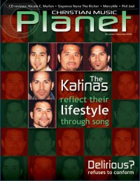

CMnexus: Contemporary Christian culture, music, and media.
|
|
The KatinasOn the cover|  | November 2002
Christian Music Planet | Media coverage:- Jun 1997 in CCM "In Concert: San Diego Sports Arena, San Diego, CA", by Dave Urbanski
- Sep 1998 in CCM "In Concert: E.R.A.C.E. Night, Willmar, Minnesota", by Doug Trouten
- Jun 1999 in CCM "Talent Pool: Father, Son, and Mother Tongue", by Liz Kelly
- Nov 1999 in CCM "The Latest Craze", by Lou Carlozo
- Mar 2000 in Campus Life "Tell Me About It: The Katinas"
- Jul 2000 in Campus Life "Our Heroes: Sam Katina (The Katinas)"
- Jul 2001 in CCM "Children of Destiny", by Marcia Bartenhagen
- Sep 2001 in Church Musician Today "An Interview With James and John of The Katinas", by Kirk Kirkland
- Oct 2001 in CCM "All Access: Latin Music Poised For Growth", by Beau Black
- Nov 2002 in Christian Music Planet "The Katinas", by Linda DuBois
- Dec 2003 in CCM "All In The Family", by Joan Brasher
- 15 Jun 2014 in CCM Digital "Gotee Records Celebrates 20 Years", by Matt Conner
Albums & reviews:1991: Katina Boyz1999: The Katinas1999: Los Katinas2001: Destiny2001: Destino2002: Lifestyle: A Worship Experience2003: Roots2005: Timeless2008: Still2015: Sunday Set Award Summary (Nominations / Wins)Dove Awards2001 Dove Awards- Urban Recorded Song: "There You Are"
2002 Dove Awards- Urban Recorded Song: "It's Real"
- Spanish Language Album: Destino
2003 Dove AwardsBooks about The Katinas- "The Katinas (a.k.a. Katina Boyz)" in The Encyclopedia of Contemporary Christian Music (Mark Allan Powell, 2002)
|